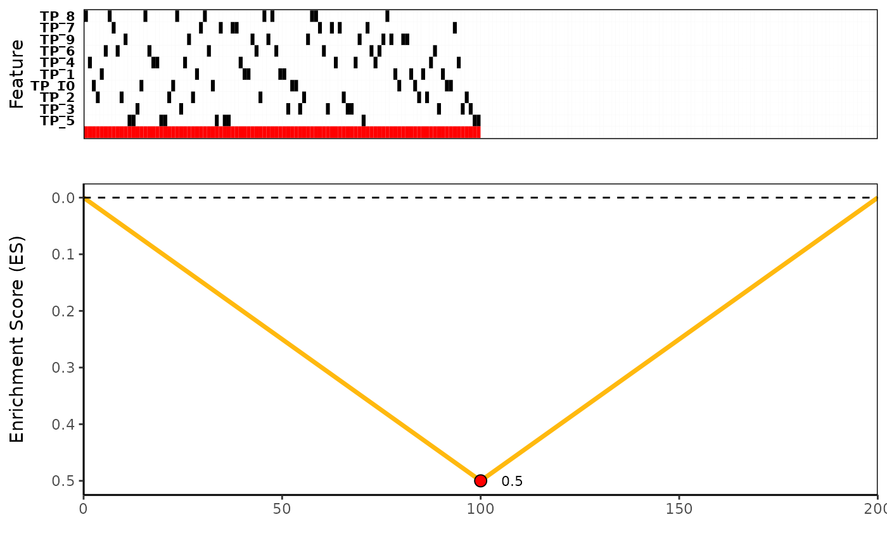

Plot the candidate search results for a given CaDrA run. Plot will include an optional bar plot of the continuous ranking variable (top),
meta_plot(ESet, var_score = NULL, var_name = "")an ESet object containing only the features returned from the candidate_search() function (if any)
an optional integer vector of continuous measures used to rank samples for the stepwise search (assumed in matching order)
a string object describing the name of the continuous measure used, which will be used as the y-axis label for the metric plot
A plot graphic with the ranked metric plot (optional), a tile plot of the features within the provided ESet, and the corresponding Enrichment Score (ES) for a given distribution (here, this will correspond to the logical OR of the features)
data(sim.ES)
data(topn.list)
# Plot the results from a top-N evaluation by passing the resulting ESet from a specific run
# To find the combination of features that had the best score
best_meta <- topn_best(topn_list=topn.list)
# Now we can plot this set of features
meta_plot(best_meta$ESet)
# If a continuous ranking variable was used for the sample-ranking, we can visualize it together
# Just for illustration purposes, we simulate random sample scores
sample_scores <- sort(runif(ncol(sim.ES),0,1), decreasing=TRUE)
meta_plot(ESet=best_meta$ESet, var_score=sample_scores, var_name="My ranking variable")
